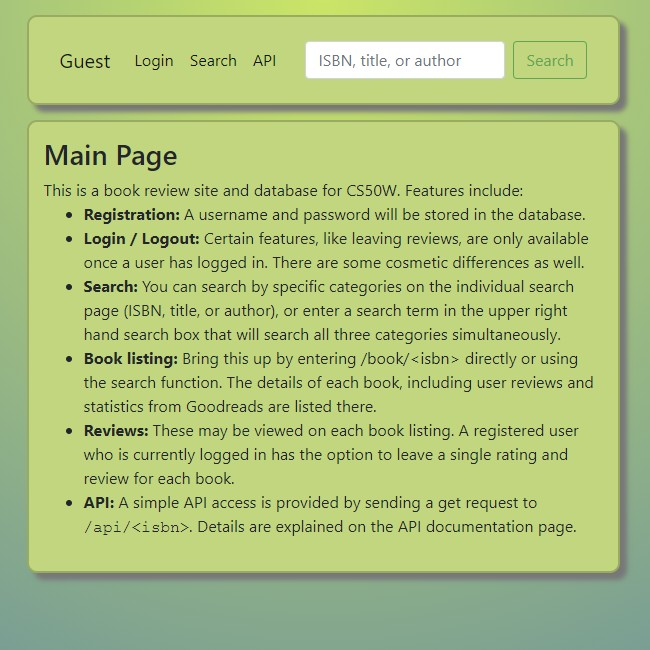
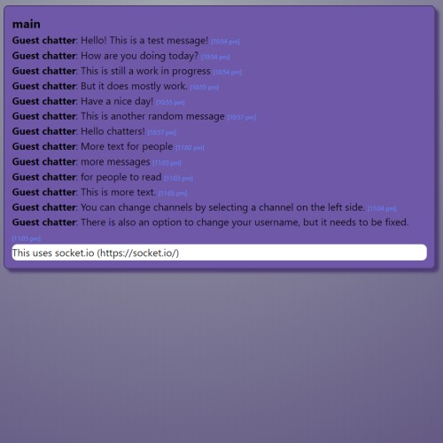

Book Review Site
A mobile-responsive mock book review site that allows users to
search for books. Flask is used to serve pages and connect to a
PostgreSQL database hosted on Heroku. The site also performs
authentication, allows users to rate and review books, and
utilizes Goodreads’s api to retrieve ratings. The site also
provides api access via JSON. Project created for Harvard's
CS50w.
Projects




Conquest
A turn-based strategy game built in React. Still a work in progress.